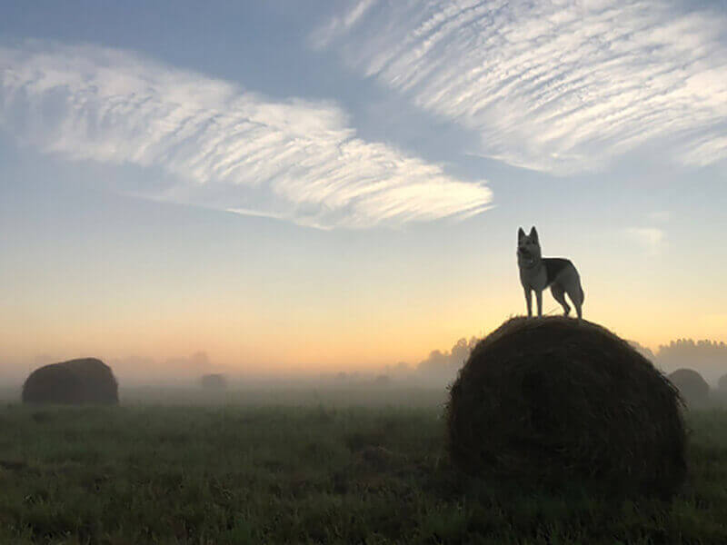
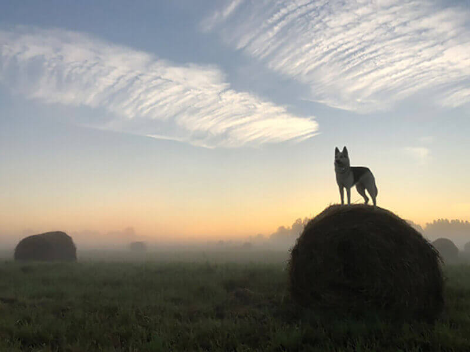
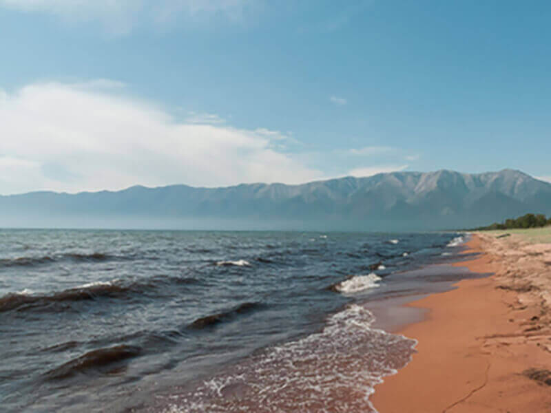
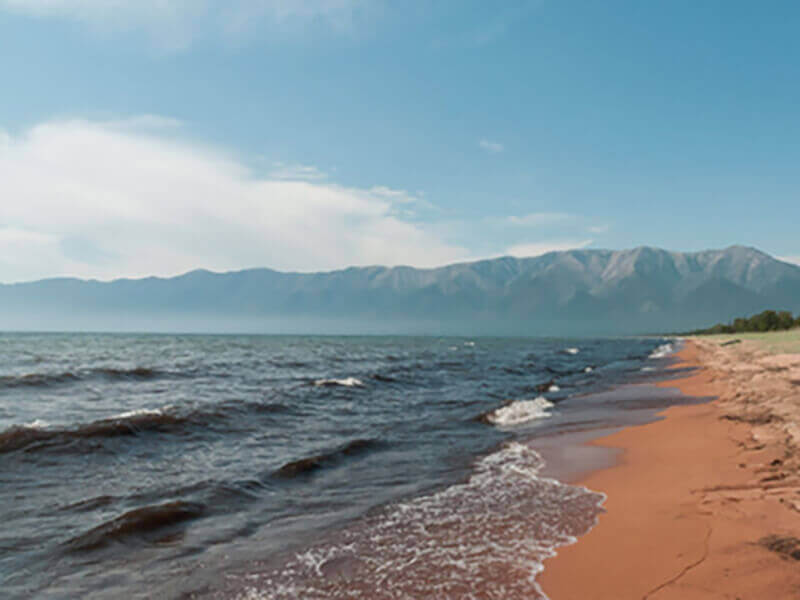
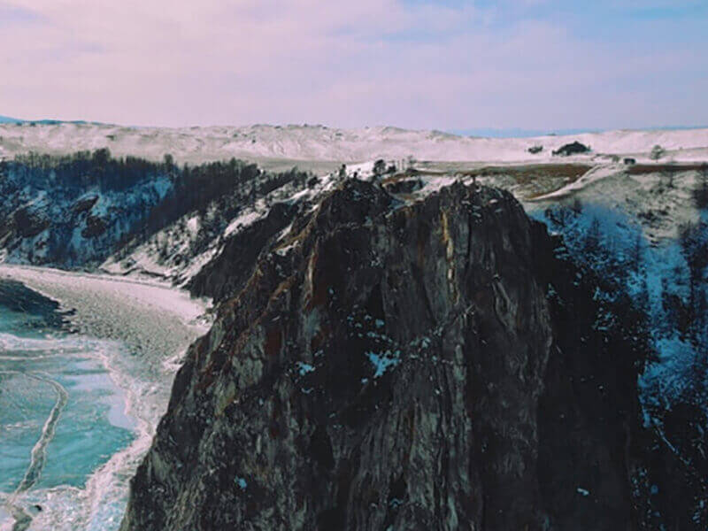
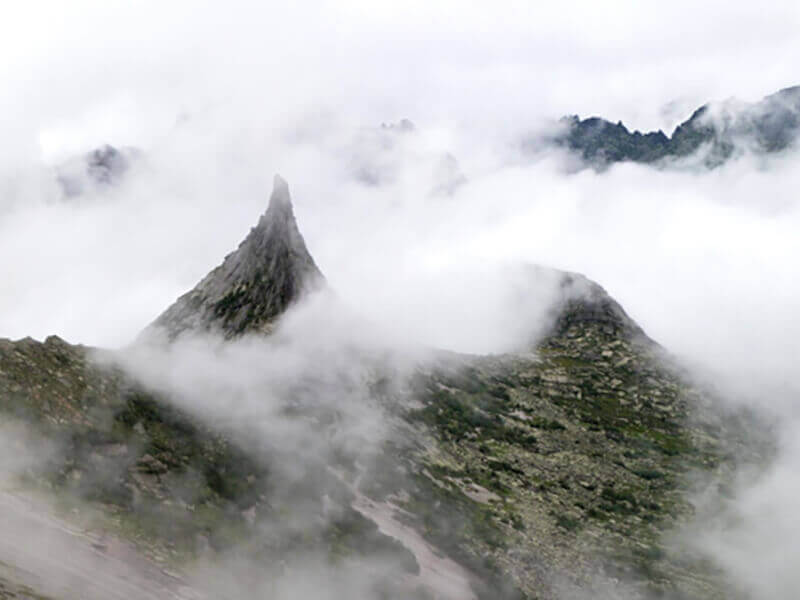
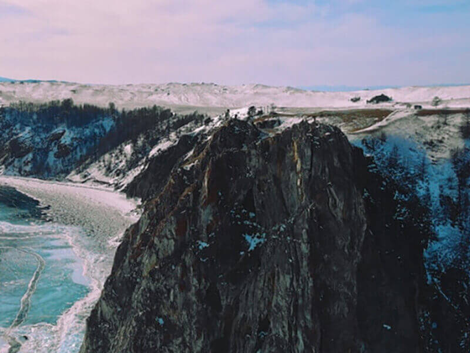
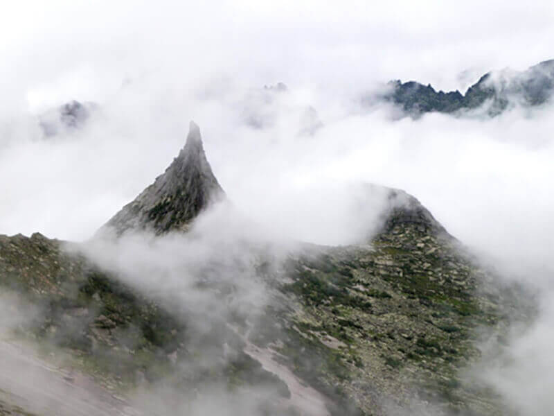

 



 



Curonian Spit
url
park-kosa.ru
Here, surrounded by forests and sand dunes, you can see two water horizons-the calm Curonian Lagoon on one side and the rippling Baltic Sea on the other. A unique natural area on the edge of a Russian enclave.
The Kaliningrad Region does not end there. For the traveler and explorer, there is also a scattering of small seaside towns in the same neighborhood — the westernmost point of Russia, the Baltic Spit, and the German heritage. The atmosphere of these places eliminates the hustle and bustle, immersing you in the tranquility of nature and the smell of the steel, cool sea.